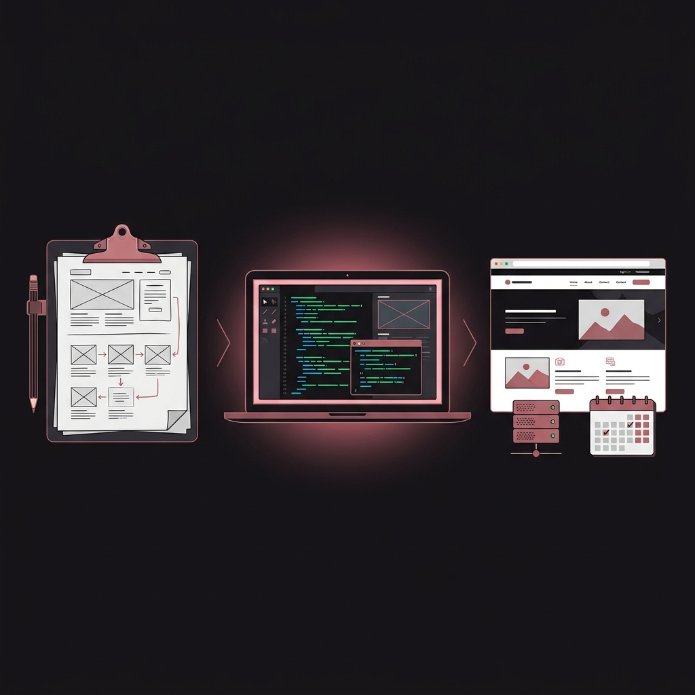
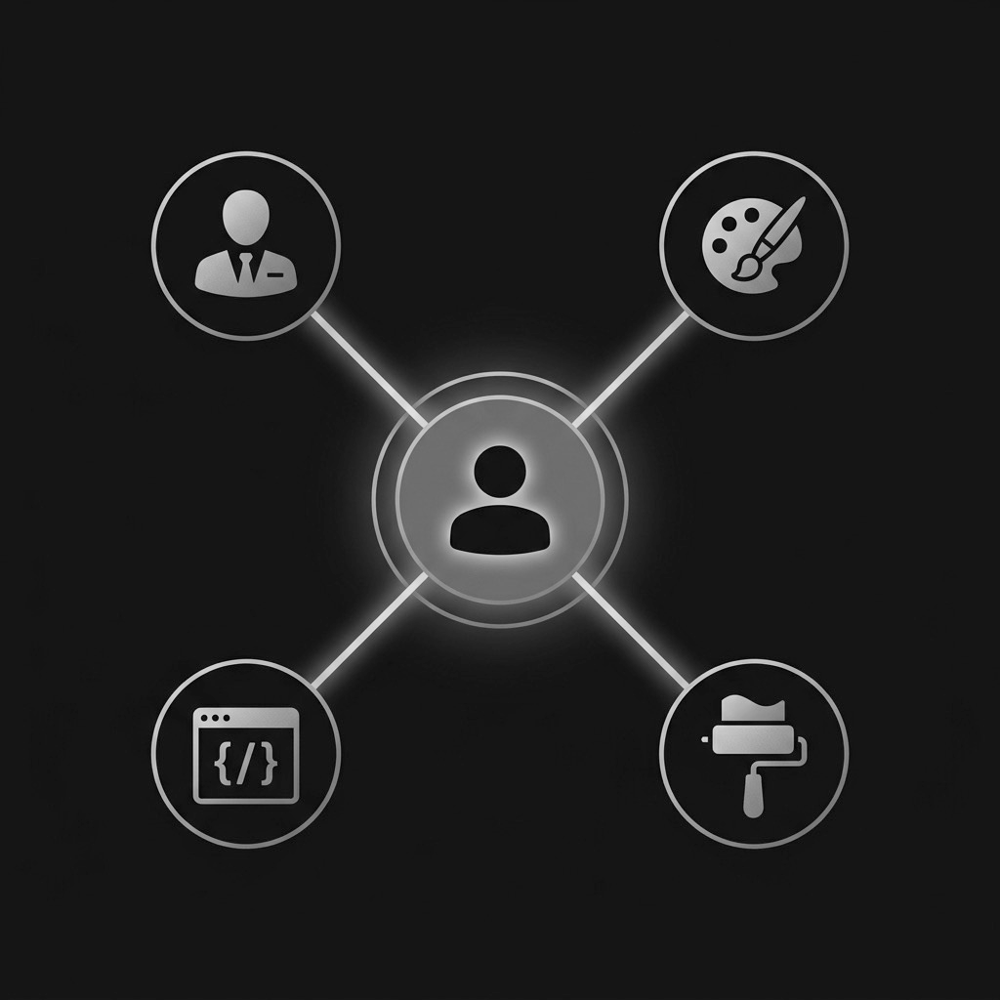
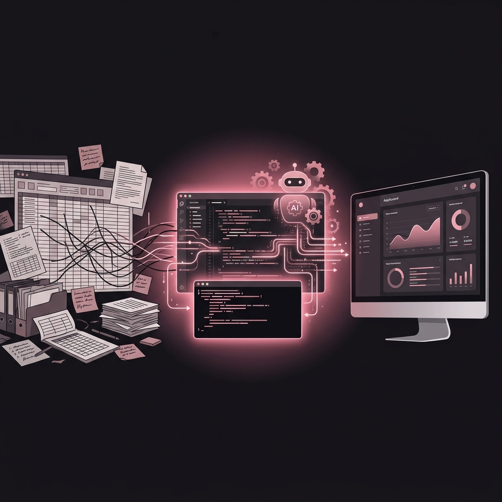
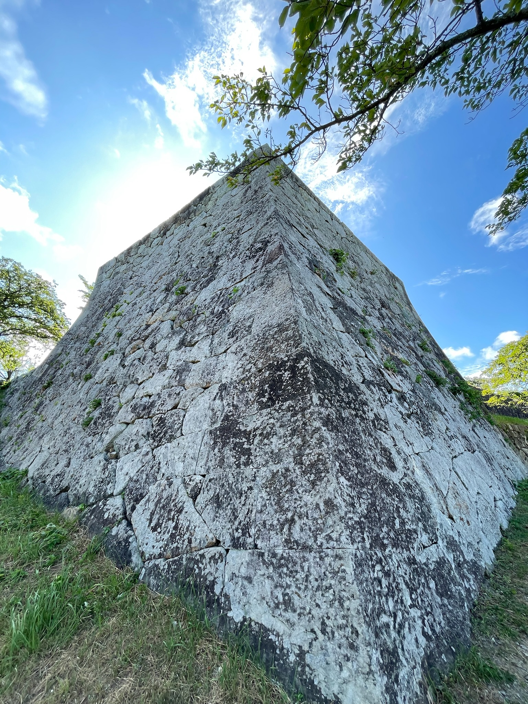

セキュア意識の高い「ＡＩ実務」✕「制作進行ディレクション」で 現場実務の最適化を図る。
業務内容
AI導入における致命的なジレンマ
「AIで業務を効率化したい。
しかし、機密情報は外に出せない」
製造業、卸売、制作会社など、BtoB下請け企業様の現場では深刻なジレンマが起きています。
製品図面や見積り基準などをクラウドAIに入力することは、情報漏洩リスクを伴うため、導入に踏み切れないのが実情です。
- 製品図面データ・設計情報
- 詳細な見積情報・原価データ
- 顧客の個人情報・機密データ
限界を迎える従来のアプローチ
AIを導入できない現場では、従来の人海戦術と外注依存が続いています。
外注依存の発生
日々の制作からWeb更新まで外部への依存が続き、細かいコストが膨張し続けています。
属人的な手作業による遅延
確認作業や属人的な手作業が残り、現場の負担と進行の遅れを招きます。
要件定義・進行のパンク
複数の外注先を束ねる伝言ゲームにより、プロジェクトの進行管理自体が破綻しやすくなります。
私のアプローチ
現場の課題
長期のBtoBであるほど、属人的な手作業や確認作業にお困りのはずです。進行遅延や管理のパンクを招く原因を解決しようにも、適切な解決策が見つからないのが実情です。
スモールスタートで堅実に改善
大掛かりなシステム導入ではなく、現場のコストや管理工数を圧迫する要因をAIで見見直します。制作進行の時間短縮を図りながら、チーム本来のポテンシャルを最大化します。
手元で動かすクローズドAI環境
閉じられた安全なAI環境の構築
手元のローカル環境や、管理されたクローズドなデータ構造を適切に選択し、外部にデータを送信しない仕組みを整備します。
機密情報を扱う現場でも安心してAIによる効率化の恩恵を受けることが可能になります。
- 自社の見積りや図面を安全に読み込み
- 情報漏洩リスクを抑えた実務の自動化・補助
- 簡易RAG設定による独自知識のフル活用
業務フローの再構築
複雑な伝言ゲーム
スマートな実務体制へ
AI × 静的サーバーホスティングで実現するスマートなWeb制作・運用
コストを抑え、アジャイルに構築・運用
過剰に高機能なWebシステムやCMSは排します。AIツールを活用し、実用的なLP・Webページ・バナーを迅速に制作します。
公開先には静的サーバーホスティング等のモダンなホスティングを活用。サーバー維持費を抑え、継続しやすい月額運用体制を構築します。
- AI活用による制作スピード向上とコスト抑制
- ホスティング公開による維持コストの最小化
- 更新・運用管理の包括サポート
- チーム向けAI業務効率化レクチャー of 提供

Web運用コスト構造の最適化
旧来の運用コスト構造
最適化された運用体制
要件の整理から納品進行まで——AIを補助に用いた進行調整サポート
進行状況の確認・関係者間スケジュール調整をサポート
要件の整理からデータ入稿進行・テストアップ時の確認調整まで、制作プロジェクトの進行調整を引き受けます。
スケジュール調整や関係者間の連絡の橋渡しを月額契約でサポートします。AIを補助的に用いて要件を整理し、現場のペースに沿った円滑な進行をサポートします。
- 要件整理から納品進行までのスケジュール調整サポート
- AIを補助に用いた要件・仕様の整理
- 月額契約による継続的な進行管理の代行
- 入稿・テストアップへの進行サポート

制作進行フロー——5ステップでの確認サポート
AIツールを要件整理の補助に用いることで、現場のペースに沿った効率的な管理・進行をサポートします。
Step 01
要件整理
Define Requirements
Step 02
AI補助・効率化
AI Implementation
Step 03
制作進行
Production Progress
Step 04
確認・入稿
Review & Submit
Step 05
維持・運用
Maintenance
規格適合チェックとデータ調整
名刺から看板まで——オフラインOEM実務の進行調整
名刺、チラシ、パンフレット、看板等のオフラインクリエイティブに関するOEM制作進行を引き受けます。
業界標準のローカル制作環境を活用し、正確な印刷入稿データの作成と校正実務をサポート。直接的な進行管理で、スムーズな納品を支援します。
- 名刺・チラシ・パンフレット・看板等の各種印刷対応への橋渡し
- 業界標準DTPツールによる正確な入稿データチェック
- 校正・修正対応を含む進行管理サポート
- 印刷所等との直接的な窓口調整
対応範囲——印刷・OEM制作アイテム
名刺・カード類
両面対応、特殊仕様の名刺・ショップカード等の入稿データ作成
チラシ・フライヤー
A4〜B2等、各種サイズの販促チラシ・フライヤーのデザインと入稿
パンフレット・冊子
会社案内・製品カタログ等の多ページ冊子のレイアウトと入稿対応
看板・サイン
屋外・屋内サイン・バナースタンド等の大判印刷用データ作成
バナー・ポスター
Web用バナーから店頭ポスターまで幅広いフォーマットに対応
校正・入稿管理
業界標準DTPツールによる正確な色校正・入稿規格確認を含む進行管理サポート
AIコード生成を活用した、現場に特化した実用ツールの構築サポート
高額な外注なしで、現場専用ツールを形にする
AIのコード生成・支援能力を引き出し、現場の日常業務を便利にする社内インナーアプリの構築をサポートします。
クライアントへの販売用簡易アプリも、高額なシステム外注を通すことなく、AIとディレクションを組み合わせて実現します。
- 手元業務フローに特化した専用インナーアプリ・マクロの作成支援
- 動作要件の厳密な定義とAIによる高速プロトタイピング
- クライアント向け販売用簡易ソフトウェアの開発サポート
- 外注会社への高額依頼を避けたコスト効率の高い開発サポート

開発支援——3フェーズのサポートプロセス
Phase 1：要件整理・仕様策定
「何を、どのように動かすか」を明確にします。現場ヒアリングをもとにAIが実現できる範囲で現実的な仕様を整理し、過剰な開発を防ぎます。
Phase 2：AI高速プロトタイピング
AIコード生成ツールを活用して短期間で動作するプロトタイプを構築。試行錯誤のサイクルを高速化し、早期に動作確認できる環境を実現します。
Phase 3：テスト・導入サポート
動作検証・修正を経て導入をサポートします。現場で使えるまで徹底フォローします。
オリジナルサッカーボール.comの運営

ディレクターのルーツ
私のディレクションの根本思想。ロジックによる機能美を追求したデザイン制作・物理的なプロダクト制作をルーツとしております。
（形態は機能に従う）
培われたデジタル領域とAIの活用においてもこの考えを適用しています。
無駄な装飾や過剰なシステムを排し、「本当に現場で機能する実務品質」だけを研ぎ澄まして提供いたします。

ABOUT
略歴
プロフェッショナルスキル
- コピーライティング・編集：出版・SP・Webを通じて、論理的で伝わるテキストを構築します。
- DTPデザイン：業界標準DTPツールを用いた入稿データ作成、校正、進行管理の実務をサポートします。
- Webディレクション＆進行管理：要件の整理から進行状況の確認、連絡調整までをサポートします。
- セキュアAI構築補助：各種クローズドツールを安全を考慮した形で実務の補助へ組み込みます。